Use Green's reciprocity theorem (Problem 3.54) to solve the following problems.
Hint: For distribution 1, use the actual situation, for distribution 2, remove $q $ and specify the charge or potential on each conductor.
(a) Both plates of a parallel-plate capacitor are grounded, and a point charge $q $ is placed between them at a distance $x $ from plate 1. The plate separation is $d $. Find the induced charge on each plate (You should find that $Q_1 =q(x/d-1) $ and $Q_2 =-qx/d $).
(b) Two concentric spherical conducting shells (radii $a $ and $b $) are grounded, and a point charge $q $ is placed between them (at radius $r $). Find the induced charge on each sphere.
(c) A point charge $q $ is located a distance $a $ from the center of a grounded conducting spherical shell of radius $R $. Find the net charge $Q $ induced on the sphere. (Treat both cases: (i) $ a > R $ and (ii) $ a < R $).
Recall that Green's reciprocity theorem states
\[\int \rho _1 V_2 d\tau =\int \rho _2 V_1 d\tau \]Here's the actual set up of the problem:
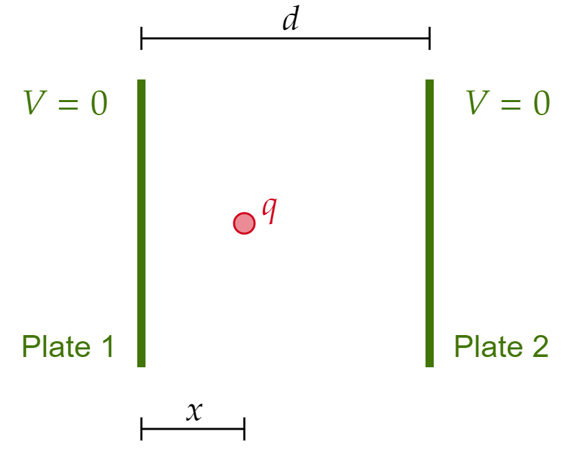To use Green's reciprocity theorem, let's consider an alternative scenario. Suppose we take out the charge $q $, and change the potential on the right plane to some $V_0 $.
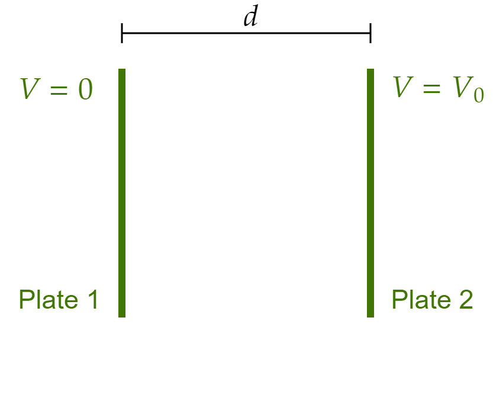Making the actual scenario "1" and the supplementary scenario "2," we see that:
\begin{align*} \int \rho _2 V_1 d\tau &= Q^{\text{ supplementary} }_{\text{At Left plane} }V^{\text{actual} }_{\text{At Left plane} }+Q^{\text{ supplementary} }_{\text{At Right plane} }V^{\text{actual} }_{\text{At Right plane} }+Q^{\text{supplementary} }_{\text{At point charge} }V^{\text{actual} }_{\text{At point charge} } \\ &= Q^{\text{supplementary} }_{\text{At Left plane} }\cancel{V^{\text{actual} }_{\text{At Left plane} }}+Q^{\text{supplementary} }_{\text{At Right plane} }\cancel{V^{\text{actual} }_{\text{At Right plane} }}+\cancel{Q^{\text{supplementary} }_{\text{At point charge} }}V^{\text{actual} }_{\text{At point charge} } \\ &= 0 \end{align*}By Green's reciprocity theorem, we can now say
\[0=\int \rho _1 V_2 d\tau \]But that is the right hand side? Let's work it out:
\begin{align*} \int \rho _2 V_1 d\tau &= Q^{\text{actual} }_{\text{At Left plane} }V^{\text{supplementary} }_{\text{At Left plane} }+Q^{\text{actual} }_{\text{At Right plane} }V^{\text{supplementary} }_{\text{At Right plane} }+Q^{\text{actual} }_{\text{At point charge} }V^{\text{supplementary} }_{\text{At point charge} } \\ &= Q^{\text{actual} }_{\text{At Left plane} }\cancel{V^{\text{supplementary} }_{\text{At Left plane} }}+Q^{\text{actual} }_{\text{At Right plane} }V^{\text{supplementary} }_{\text{At Right plane} }+Q^{\text{actual} }_{\text{At point charge} }V^{\text{supplementary} }_{\text{At point charge} } \\ &= Q^{\text{actual} }_{\text{At Right plane} }V^{\text{supplementary} }_{\text{At Right plane} }+Q^{\text{actual} }_{\text{At point charge} }V^{\text{supplementary} }_{\text{At point charge} }\\ &= Q^{\text{actual} }_{\text{At Right plane} }V^{\text{supplementary} }_{\text{At Right plane} }+qV^{\text{supplementary} }_{\text{At point charge} }\\ &= Q^{\text{actual} }_{\text{At Right plane} }V_0+qV^{\text{supplementary} }_{\text{At point charge} }\\ &= Q_2V_0+qV^{\text{supplementary} }_{\text{At point charge} } \end{align*}To further simplify this, we recall that the potential between the planes in such a configuration is linear in distance. To be more precise:
\[V(x)=\frac{V_0 x}{d} \] 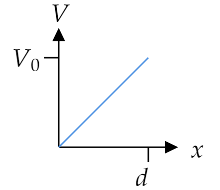So
\begin{align*} 0 &= Q_2V_0+qV^{\text{supplementary} }_{\text{At point charge} } \\ \text{this implies...} \;\;\;\;\;\;Q_2 &= -qV^{\text{supplementary} }_{\text{At point charge} } \frac{1}{V_0 }\\ &= -q\frac{V_0 x}{d}\frac{1}{V_0 }\\ &= -q\frac{x}{d} \end{align*}We got the first result! And it matches what the book says it should be. Let's work out the other induced charge (now on plate 1, namely $Q_1 $). To do so, let's consider a different "supplementary scenario" where the left plane is now set to $V_0 $ and the right plane stays at $V=0 $ as in the original scenario, of course, still ignoring $q $ in between the plates.
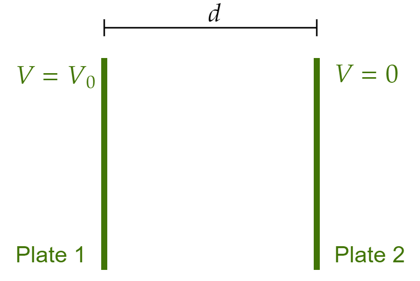We will still have
\[0=\int \rho _1 V_3 d\tau \]But the other integral will change!
\begin{align*} \int \rho _3 V_1d\tau &= Q^{\text{actual} }_{\text{At Left plane} }V^{\text{supplementary} }_{\text{At Left plane} }+Q^{\text{actual} }_{\text{At Right plane} }V^{\text{supplementary} }_{\text{At Right plane} }+Q^{\text{actual} }_{\text{At point charge} }V^{\text{supplementary} }_{\text{At point charge} } \\ &= Q^{\text{actual} }_{\text{At Left plane} }V^{\text{supplementary} }_{\text{At Left plane} }+Q^{\text{actual} }_{\text{At Right plane} }\cancel{V^{\text{supplementary} }_{\text{At Right plane} }}+Q^{\text{actual} }_{\text{At point charge} }V^{\text{supplementary} }_{\text{At point charge} }\\ &= Q^{\text{actual} }_{\text{At Left plane} }V^{\text{supplementary} }_{\text{At Left plane} }+Q^{\text{actual} }_{\text{At point charge} }V^{\text{supplementary} }_{\text{At point charge} } \\ &= Q^{\text{actual} }_{\text{At Left plane} }V^{\text{supplementary} }_{\text{At Left plane} }+qV^{\text{supplementary} }_{\text{At point charge} }\\ &= Q^{\text{actual} }_{\text{At Left plane} }V_0+qV^{\text{supplementary} }_{\text{At point charge} }\\ &= Q_1 V_0+qV^{\text{supplementary} }_{\text{At point charge} }\\ &= Q_1 V_0+q \left( V_0 \left( 1-\frac{x}{d} \right) \right) \\ &= 0;\;\;\text{by Green's reciprocity theorem} \end{align*}So
\begin{align*} Q_1 &= -q \left( V_0 \left( 1-\frac{x}{d} \right) \right)\frac{1}{V_0 } \\ &= q \left( \frac{x}{d}-1 \right) \end{align*}As expected. Notice that the potential I used for this scenario is the same as that of scenario 2 with a slight shift to accommodate the boundary conditions.
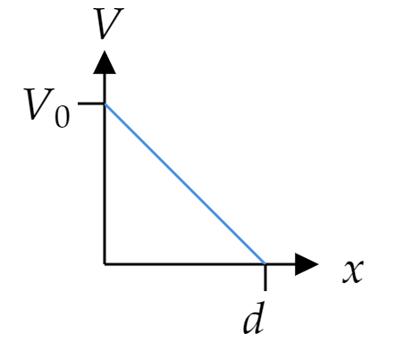We conclude that
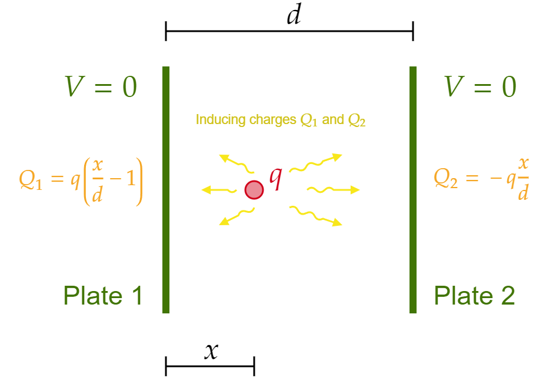The actual set up looks like
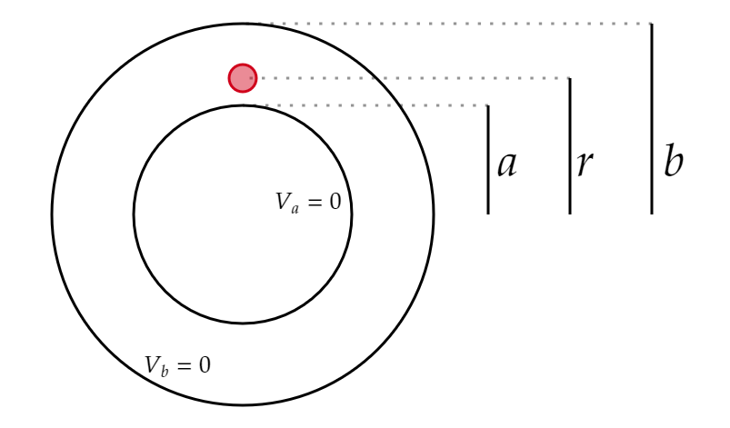And from the solution to part (a), we can already expect to use two supplementary configurations:
One with no $q $ charge and inner sphere at some non-zero potential $V_0 $:
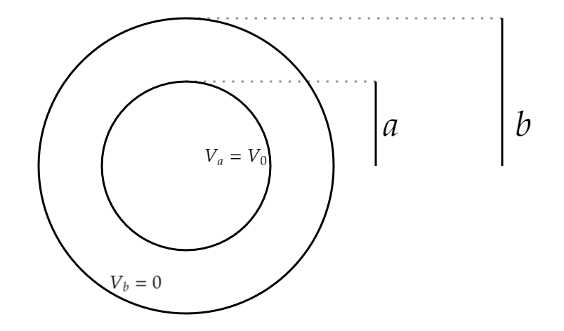And no charge and no $q $ charge and outer sphere at some non-zero potential $V_0 $:
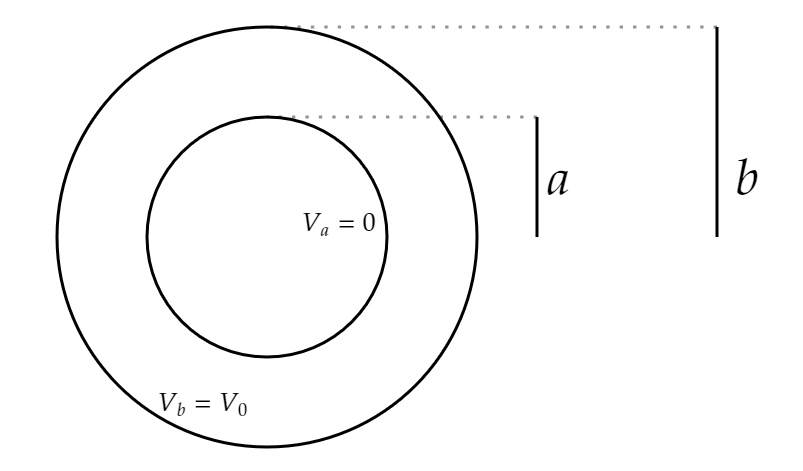We can also expect the $\rho _{2,3}V_1 $ integral to vanish, and it does:
\begin{align*} \int \rho _2 V_1 d\tau=\int \rho _3 V_1 d\tau &= Q^{\text{supplementary} }_{\text{At $r=b $} }V^{\text{actual} }_{\text{At $r=b $} }+Q^{\text{supplementary} }_{\text{At $r=a $} }V^{\text{actual} }_{\text{At $r=a $} }+Q^{\text{supplementary} }_{\text{At point charge} }V^{\text{actual} }_{\text{At point charge} } \\ &= Q^{\text{supplementary} }_{\text{At $r=b $} }\cancel{V^{\text{actual} }_{\text{At $r=b $} }}+Q^{\text{supplementary} }_{\text{At $r=a $} }\cancel{V^{\text{actual} }_{\text{At $r=a $} }}+\cancel{Q^{\text{supplementary} }_{\text{At point charge} }}V^{\text{actual} }_{\text{At point charge} } \\ &= 0 \end{align*}So we have to find $\int \rho _1 V_2 d\tau $ and $\int \rho _1 V_3 d\tau $, each of which is equal to 0 (by Green's reciprocity theorem) and will give us information about the induced charges.
We know from the solution to part (a) that we will need the potential between the spheres (without the middle charge). The general expression for this potential is
\[V(r)=A+\frac{B}{r} \]Can you see why? (This is a little overkill, but we know the general solution to Laplace's equation in spherical coordinates. The 2 concentric shells are $\theta $-symmetric, so there should only be $r $-dependence, meaning that the only Legendre Polynomial that we can use is $l=0 $ which is equal to 1, and so we are left with $V(r)=A_0 r^0 +\frac{B_0 }{r^{0+1}}\equiv A+\frac{B}{r} $. See Eq. 3.65 in your book if this is not ringing a bell).
Let's first study the situation where $V_a=V_0 $. Then the potential in between satisfies:
\begin{align*} V(a) &= A+\frac{B}{a}=V_0 \\ V(b) &= A+\frac{B}{b}=0 \end{align*}This (linear) system of equations (for variables $A $ and $B $) has the solution:
\begin{align*} A &= -\frac{aV_0 }{b-a} \\ B &= \frac{abV_0 }{b-a} \end{align*}So
\[V_{(2)}(r)=\frac{aV_0 }{b-a} \left( \frac{b}{r}-1 \right) \] 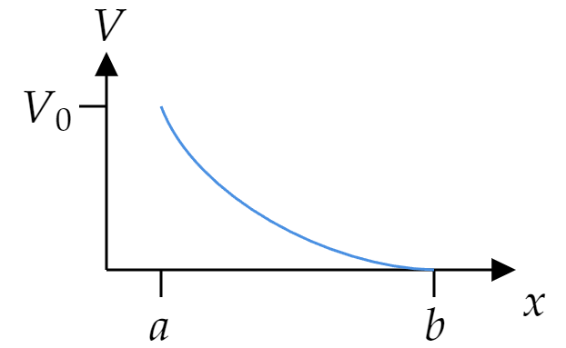We can now compute
\begin{align*} 0=\int \rho _1 V_2 d\tau &= Q^{\text{actual} }_{\text{At $r=b $} }V^{\text{supplementary} }_{\text{At $r=b $} }+Q^{\text{actual} }_{\text{At $r=a $} }V^{\text{supplementary} }_{\text{At $r=a $} }+Q^{\text{actual} }_{\text{At point charge} }V^{\text{supplementary} }_{\text{At point charge} } \\ &= Q^{\text{actual} }_{\text{At $r=b $} }\cancel{V^{\text{supplementary} }_{\text{At $r=b $} }}+Q^{\text{actual} }_{\text{At $r=a $} }V^{\text{supplementary} }_{\text{At $r=a $} }+Q^{\text{actual} }_{\text{At point charge} }V^{\text{supplementary} }_{\text{At point charge} } \\ &= Q^{\text{actual} }_{\text{At $r=a $} }V^{\text{supplementary} }_{\text{At $r=a $} }+Q^{\text{actual} }_{\text{At point charge} }V^{\text{supplementary} }_{\text{At point charge} }\\ &= Q_aV^{\text{supplementary} }_{\text{At $r=a $} }+Q^{\text{actual} }_{\text{At point charge} }V^{\text{supplementary} }_{\text{At point charge} }\\ &= Q_aV_0+Q^{\text{actual} }_{\text{At point charge} }V^{\text{supplementary} }_{\text{At point charge} }\\ &= Q_aV_0+qV^{\text{supplementary} }_{\text{At point charge} }\\ &= Q_aV_0+qV_{(2)}(r)\\ &= Q_aV_0+q \left( \frac{aV_0 }{b-a} \left( \frac{b}{r}-1 \right) \right) \end{align*} So \[Q_a=q\frac{a}{b-a} \left( 1-\frac{b}{r} \right) \] Let's now find the induced charge using the set up where $V_b=V_0 $ while $V_a=0 $ (of course, no point charge $q $). We will need the potential. Again, the general solution is $V(r)=A+\frac{B}{r} $, now subject to the boundary conditions: \begin{align*} V(a) &= A+\frac{B}{a}=0 \\ V(b) &= A+\frac{B}{b}=V_0 \end{align*} Which is pretty much the same system (of linear equations) as before, so we rapidly conclude that \[V_{(3)}(r)=\frac{bV_0 }{b-a} \left( 1-\frac{a}{r} \right) \] 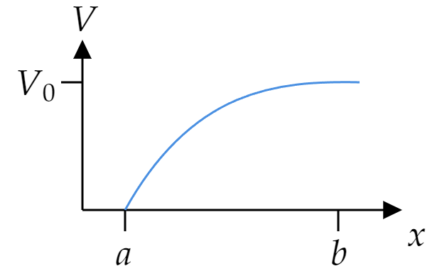At this point we know that the integral will reduce to the expression: (same steps as before, but the term that cancels is $Q^{\text{actual} }_{\text{At $r=a $} }V^{\text{supplementary} }_{\text{At $r=a $} } $).
\[0=Q_bV_0 + qV_{(3)}(r) \]We solve for $Q_b $ to find that:
\[Q_b= q\frac{b}{b-a} \left( \frac{a}{r}-1 \right) \]Feel free to play with the sliders and see how the potentials between the spheres behaves:
Let's first consider the case $a>R $. The actual setup is:
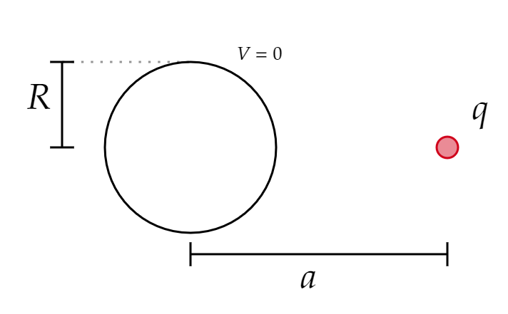And the supplementary setup is such that there is no point charge outside (or anywhere!) with the conductor at some non-zero potential $V_0 $:
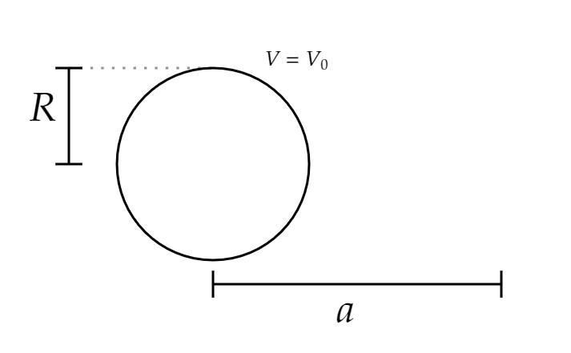We have that
\begin{align*} \int \rho _2 V_1 d\tau &= Q_{\text{sphere} }^{\text{supplementary} }V_{\text{sphere} }^{\text{actual} }+Q_{\text{charge} }^{\text{supplementary} }V^{\text{actual} }_{\text{charge} } \\ &= Q_{\text{sphere} }^{\text{supplementary} }\cancel{V_{\text{sphere} }^{\text{Actual} }}+\cancel{Q_{\text{charge} }^{\text{supplementary} }}V^{\text{actual} }_{\text{charge} }\\ &= 0 \end{align*}And then by Green's reciprocity theorem:
\begin{align*} 0=\int \rho _1 V_2 d\tau &= Q_{\text{sphere} }^{\text{actual} }V_{\text{sphere} }^{\text{supplementary} }+Q_{\text{charge} }^{\text{actual} }V^{\text{supplementary} }_{\text{charge}} \\ &= Q_{\text{induced} }V_0 +qV(r=a) \end{align*}Where $V(r) $ is the potential due to a conducting sphere at potential $V_0 $. Conductors have uniform charge, so this is a familiar problem! We know that if a shell has charge $Q $ on its surface (uniformly charged), then the potential outside is:
\[V(r)=\frac{1}{4\pi \epsilon _0 }\frac{Q}{r} \]With the boundary condition $V(R)=V_0 $, we see that
\[Q=V_0 R (4\pi \epsilon _0 ) \]So
\[V(r)=\frac{V_0 R}{r} \]Continuing solving for $Q_{\text{induced} } $, we have:
\begin{align*} 0 &= Q_{\text{induced} }V_0 +qV(r=a);\;\;\text{as seen above} \\ \text{So} \;\;\;\;\;Q_{\text{induced} } &= -\frac{q}{V_0 }V(r=a)\\ &= -\frac{q}{V_0 }\frac{V_0 R}{a}\\ &= -\frac{q R}{a} \end{align*}Let's now consider the case $a < R$, that is, the charge is inside the shell:
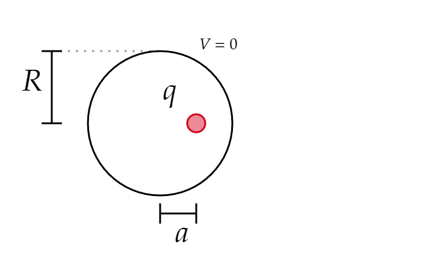And the supplementary setup is such that there is no point charge inside (or anywhere!) with the conductor at some non-zero potential $V_0 $:
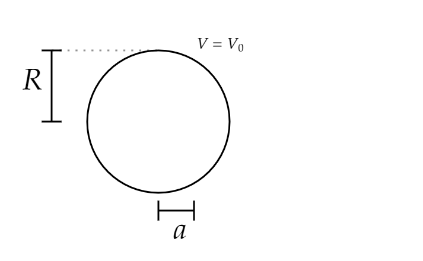We have that
\begin{align*} \int \rho _2 V_1 d\tau &= Q_{\text{sphere} }^{\text{supplementary} }V_{\text{sphere} }^{\text{actual} }+Q_{\text{charge} }^{\text{supplementary} }V^{\text{actual} }_{\text{charge} } \\ &= Q_{\text{sphere} }^{\text{supplementary} }\cancel{V_{\text{sphere} }^{\text{Actual} }}+\cancel{Q_{\text{charge} }^{\text{supplementary} }}V^{\text{actual} }_{\text{charge} }\\ &= 0 \end{align*}And then by Green's reciprocity theorem:
\begin{align*} 0=\int \rho _1 V_2 d\tau &= Q_{\text{sphere} }^{\text{actual} }V_{\text{sphere} }^{\text{supplementary} }+Q_{\text{charge} }^{\text{actual} }V^{\text{supplementary} }_{\text{charge}} \\ &= Q_{\text{induced} }V_0 +qV(r=a) \end{align*}Once again we have
\[Q_{\text{induced} } = -\frac{q}{V_0 }V(r=a) \]But now $V $ takes a different form. You should know by now that the potential inside a uniformly charged sphere is constant. (Why? The electric field inside is zero, so calculating the potential reduces to an integral from $\infty $ to $R $, rather than $r $ with $r < R $). We discussed above that outside the sphere, $V(r)=\frac{1}{4\pi \epsilon _0 }\frac{Q}{r} $, so inside it is:
\[V_{\text{in} }(r)=\frac{1}{4\pi \epsilon _0 }\frac{Q}{R} \]Where $Q $ is again what we found before: $Q=V_0 R (4\pi \epsilon _0 ) $ so that it satisfies the boundary condition. We thus conclude
\begin{align*} Q_{\text{induced} } &= -\frac{q}{V_0 }V_{\text{inside} }(r=a) \\ &= -\frac{q}{V_0 }V_0 \\ &= -q \end{align*}